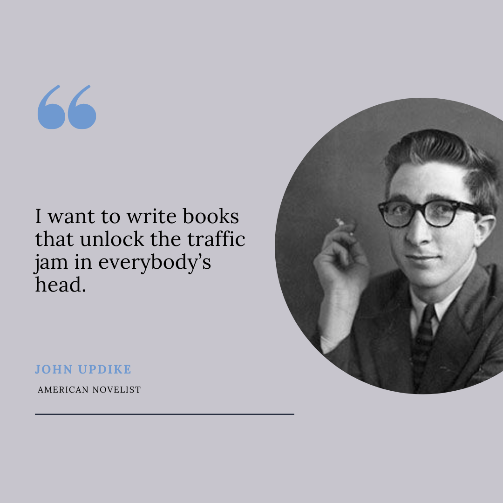
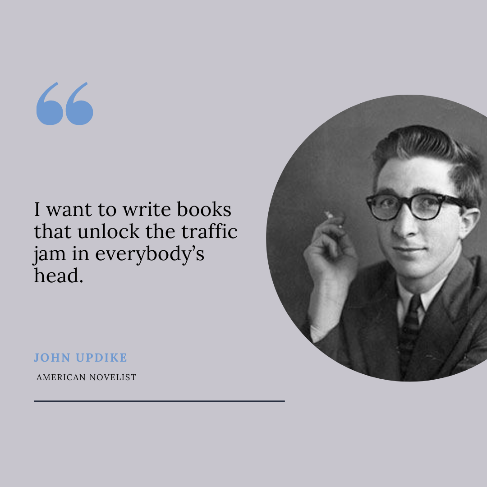
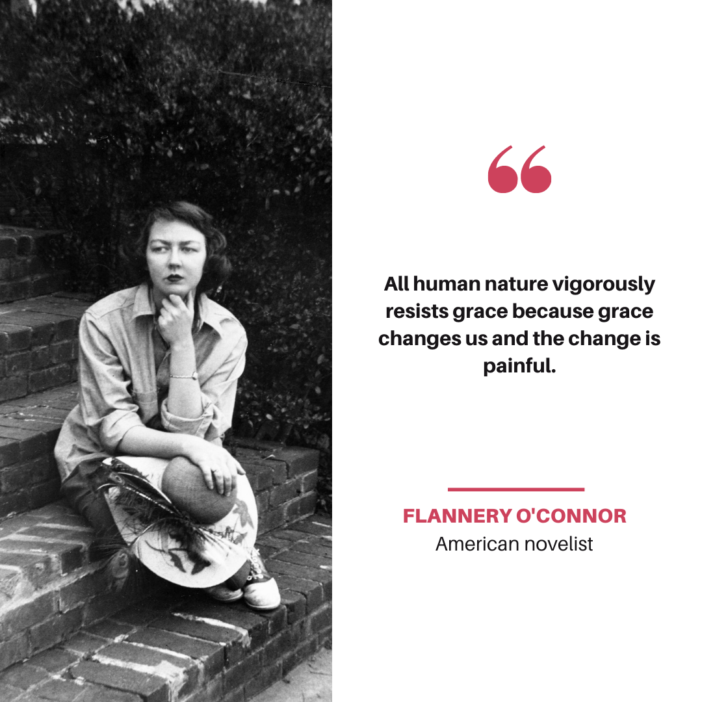
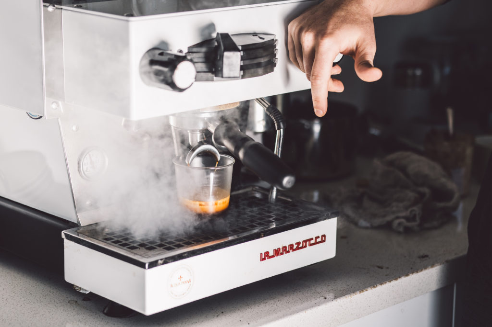
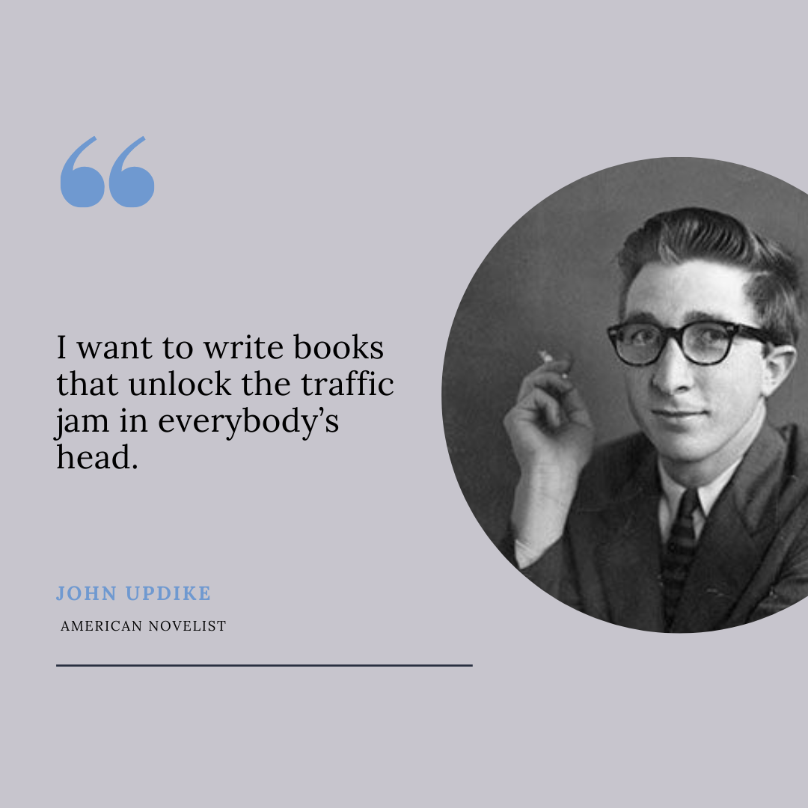
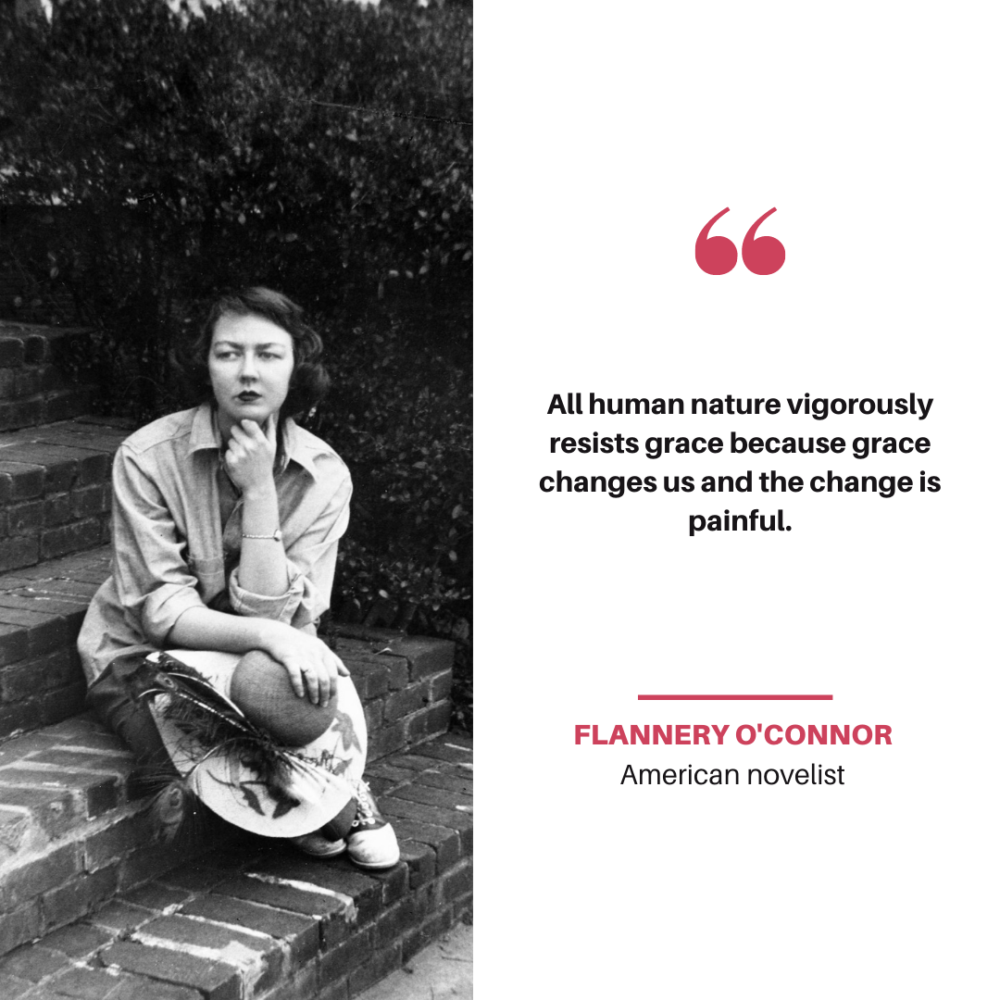
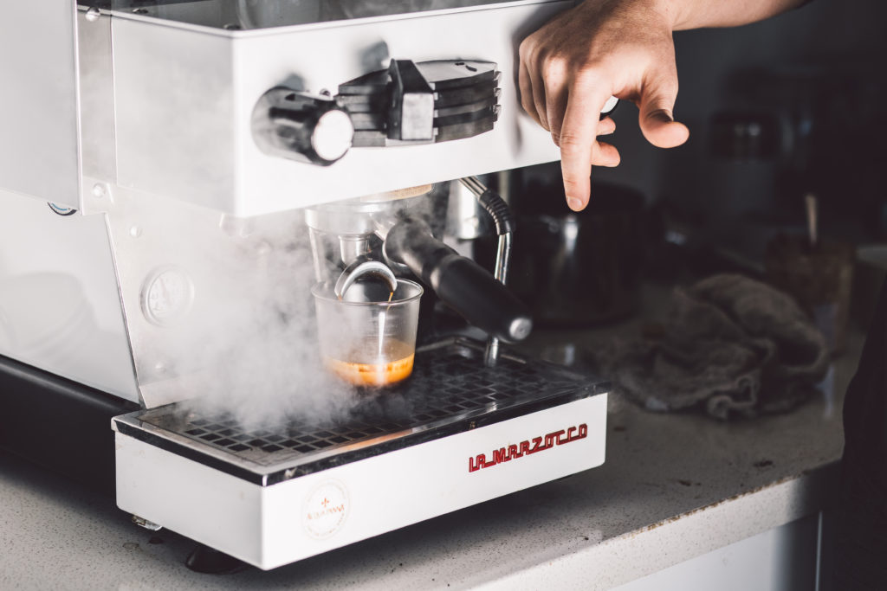

Jonathan Medina
I am currently a Shift Lead Barista at Bodhi Leaf La Habra I average around 100 drinks per shift and dedicate myself to maintaining excellent customer service.
I am a 20 year old third year student at UCR. Academically, I plan to major in History while also pursuing a minor in Spanish. As well as being in school I am actively pursuing a career in music. Music is definitely one of the biggest passions I have, if not the biggest. I have been playing the piano since I was 11 and have had the chance to play in events, concerts, and church events as well. Though, my dream is to be able to produce my own music as well as play it live for audiences. I hope to one day be able to become an independent artist myself and help others as well achieve their own goals in the world of music and the arts. To me it is a big goal to take and learn as much as you can and use that in every aspect of your life. I believe that pursuing history while also a musical and a Barista helps me appreciate the art of learning as well and it has showed me how much I can do with different things in my life.
If there’s one word that encapsulates who I am as a person, it’s creative. I definitely see myself as someone who works hard in order to achieve what they want and someone who always finds a way to get things done.
I have had the pleasure of working in various fields ranging from the kitchen of Rubio’s Coastal Grill, to the sales floor of Target to my current Lead Barista Position at Bodhi. A notable piece I have done though is my internship with Inlandia Institute. Inlandia is a non-profit organization based in the Inland Empire, specifically Riverside, CA. Inlandia comes from humble beginnings. The non-profit grew from the self titled anthology called Inlandia: A Literary Journey through California’s Inland Empire, which was published by Heyday Books in 2006. Inlandia also emphasizes that this publication was possible with the help of the Riverside Public Library. Inlandia thus was founded in 2007 and became a non-profit officially in 2012. For my specific project in this Internship I focused on creating graphics for social media. On almost every day, there is a post that goes out onto Twitter, Instagram, and Facebook. These posts can range from reminders of events that are taking place soon, or contests, to the birthdays of artists. Thus, Inlandia has a spreadsheet of the whole year with all these important days and the posts that will go out. What I focused on then was to create graphics for birthdays of the artists, poets, or writers in that spreadsheet.
Experience
Social Media Designer
• Worked on Social Media posts for Inlandia
• Graphic Designs
• Wide Experience with Canva, Word, POS systems
Food and Beverage Lead
• Responsible for organizing merchandise, helping guests
• FIFO, Stock Products
Lead Barista
• Sold Product to Guests
• Excellent Customer Service
• Prepped drinks and food at adequate temperature
• Provided rapid and consistant service to meet guests needs
Education
Univerist of California Riverside
Portfolio
 



 